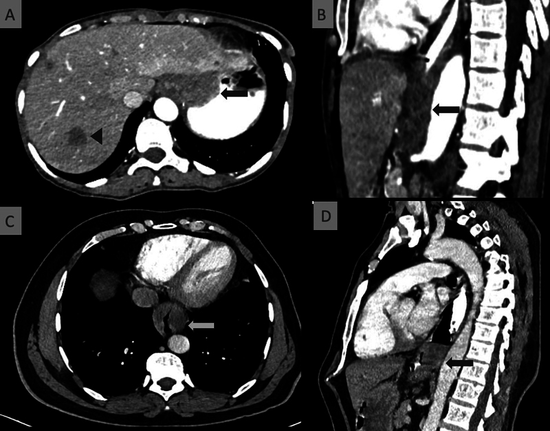
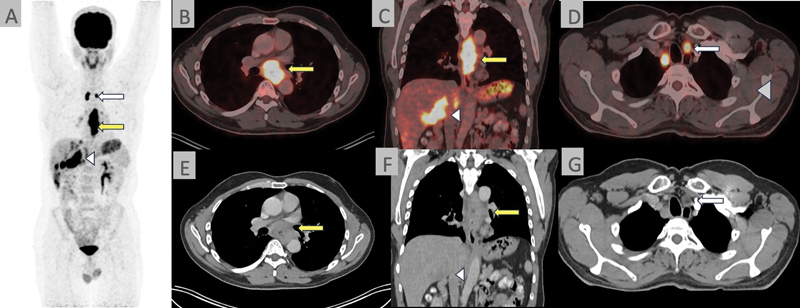

術前準備
前言
食道癌微創手術是一項大型手術，良好的術前準備可以顯著降低手術風險並促進術後恢復。本章將帶您了解從確定手術到進入手術室之前，您需要完成的各項準備工作。
術前檢查項目
在決定手術之前，醫療團隊需要透過一系列檢查來全面評估您的身體狀況：

圖：電腦斷層 (CT) 顯示局部晚期食道癌，可見食道壁不對稱增厚。圖片來源：Talasila P, et al. Indian Journal of Medical and Paediatric Oncology. 2024. CC-BY. 原文：PMC11651834

圖：F18-FDG PET-CT 顯示食道癌原發腫瘤、淋巴結及遠端轉移。圖片來源：同上。
1. 腫瘤相關檢查
| 上消化道內視鏡 (EGD) |
確認腫瘤位置與範圍 |
同時做切片確認病理型態 |
| 電腦斷層 (CT) |
評估腫瘤侵犯範圍 |
包含胸部及腹部掃描 |
| 正子攝影 (PET/CT) |
偵測全身是否有轉移 |
對治療計畫非常重要 |
| 內視鏡超音波 (EUS) |
評估腫瘤深度 |
判斷 T 分期的重要依據 |
2. 心肺功能評估
由於手術需要全身麻醉 (general anesthesia) 且涉及胸腔操作，心肺功能的評估格外重要：
- 肺功能檢查 (pulmonary function test, PFT)：評估您的肺活量與呼吸功能
- 心電圖 (electrocardiogram, ECG)：確認心臟節律是否正常
- 心臟超音波 (echocardiography)：視需要評估心臟功能
- 動脈血氣體分析 (arterial blood gas, ABG)：視需要進行
3. 一般術前檢驗
- 血液常規檢查 (complete blood count, CBC)
- 肝腎功能 (liver and renal function tests)
- 凝血功能 (coagulation profile)
- 血型及交叉試驗 (blood type and crossmatch)
- 胸部 X 光 (chest X-ray)
- 營養狀態評估（白蛋白 albumin、前白蛋白 prealbumin）
術前輔助治療 (Neoadjuvant Therapy)
什麼是術前輔助治療？
對於中期的食道癌（Stage II-III），目前的國際指引（NCCN 2025、ESMO 2022）建議在手術之前先接受術前輔助治療，目的是：
- 縮小腫瘤：讓手術更容易完整切除
- 消滅微小轉移：殺滅肉眼看不見的微小癌細胞擴散
- 提高存活率：研究證實術前治療可改善長期治療成果
術前治療的方式
根據癌症的類型與分期，醫師可能建議：
- 術前同步化學放射治療 (neoadjuvant chemoradiation therapy, nCRT)
- 同時進行化學治療 (chemotherapy) 和放射治療 (radiation therapy)
- NCCN 2025 指引建議此為局部進展型腺癌 (adenocarcinoma) 的首選方案
- 療程通常約 5-6 週
- 術前化學治療 (neoadjuvant chemotherapy)
- 僅使用化學治療藥物
- ESMO 指引建議周術期化療 (perioperative chemotherapy) 為選項之一
- 療程通常 2-3 個月
- 術前免疫治療合併化療 (neoadjuvant immunotherapy + chemotherapy)
- 較新的治療模式，特別適用於鱗狀細胞癌 (SCC)
- 目前多項臨床試驗顯示令人鼓舞的結果
術前治療期間的注意事項
- 規律接受治療，不要自行中斷
- 若出現嚴重副作用（如高燒、嚴重嘔吐），立即聯繫醫療團隊
- 維持均衡飲食，補充足夠營養
- 療程結束後約 4-8 週安排手術
營養優化 (Nutrition Optimization)
食道癌患者常因吞嚥困難而營養不良，但良好的營養狀態是手術成功的重要基礎：
營養評估指標
- 體重變化趨勢
- 血清白蛋白 (serum albumin) 數值
- 身體質量指數 (body mass index, BMI)
營養支持策略
- 口服營養補充 (oral nutritional supplements, ONS)
- 高蛋白、高熱量的營養品
- 少量多餐，選擇質地柔軟或流質的食物
- 管灌營養 (enteral nutrition)
- 若口服進食量嚴重不足，醫師可能建議放置鼻胃管 (nasogastric tube) 或空腸造口管 (jejunostomy tube) 來補充營養
- 靜脈營養 (parenteral nutrition)
飲食建議
- 選擇高蛋白食物：魚、蛋、豆腐、雞肉
- 少量多餐（每天 6-8 小餐）
- 避免太硬、太乾或太大塊的食物
- 細嚼慢嚥
- 必要時將食物打成泥狀或流質
- 每天記錄飲食量，回診時告知營養師
戒菸 (Smoking Cessation)
如果您目前仍有吸菸習慣，戒菸是術前最重要的準備之一：
為什麼必須戒菸？
- 吸菸會損害肺部功能，增加術後肺炎 (pneumonia) 和呼吸衰竭的風險
- 影響傷口癒合
- 增加麻醉併發症的風險
- 持續吸菸會降低化療和放療的效果
理想的戒菸時間
- 最好在手術前至少 4-8 週完全戒菸
- 即使是手術前 2 週戒菸，也能部分降低併發症風險
- 醫師可開立戒菸藥物或轉介戒菸門診協助您
術前運動訓練 (Prehabilitation)
術前運動訓練是近年來越來越受重視的準備項目，研究顯示能有效改善術後恢復：
呼吸訓練
- 誘發性肺量計 (incentive spirometry) 練習：每小時做 10 次深呼吸
- 腹式呼吸 (diaphragmatic breathing)：深吸氣讓腹部鼓起，緩慢吐氣
- 有效咳嗽練習：學會如何在術後正確地咳痰
體能訓練
- 每天步行至少 30 分鐘
- 簡單的上下肢肌力訓練
- 視體能狀況循序漸進增加運動量
心理準備
- 了解手術流程，減少未知的焦慮
- 若感到焦慮或憂鬱，可向醫療團隊尋求心理支持
- 與家人討論術後的照護安排
術前準備時間表
flowchart TD
A[確定診斷<br/>與分期] --> B[MDT 團隊<br/>討論治療計畫]
B --> C{需要術前<br/>輔助治療?}
C -->|是| D[術前化放療<br/>約 5-6 週]
C -->|否| E[直接安排<br/>手術準備]
D --> F[休息恢復<br/>4-8 週]
F --> G[術前評估<br/>檢查]
E --> G
G --> H[營養優化<br/>運動訓練<br/>戒菸]
H --> I[術前 1 週<br/>最終確認]
I --> J[手術前一天<br/>入院準備]
J --> K[手術日]
手術前一天的準備
入院當天
- 辦理住院手續
- 麻醉科醫師術前訪視，說明麻醉方式與風險
- 護理師說明術後照護注意事項
- 確認手術同意書已簽署
飲食
- 依醫囑時間開始禁食 (NPO)（通常是手術前 6-8 小時）
- 手術前 2 小時可能允許喝少量清水（依各院規定）
其他準備
- 依指示進行腸道準備（視醫囑而定）
- 沐浴清潔
- 移除指甲油、首飾、假牙、隱形眼鏡
- 穿著寬鬆舒適的衣物
住院需要攜帶的物品
必要物品
- 身分證、健保卡
- 個人藥物清單（目前正在服用的所有藥物）
- 過敏史紀錄
- 事前填寫好的醫療文件
日常用品
- 個人盥洗用品（牙刷、毛巾、衛生紙）
- 舒適的拖鞋或防滑鞋
- 寬鬆的換洗衣物（前開式較方便）
- 面紙、濕紙巾
恢復輔助用品
- 手機與充電器
- 小枕頭（術後咳嗽時可抱住胸口減少疼痛）
- 簡單的娛樂物品（書、平板）
不建議攜帶
- 貴重物品
- 大量現金
- 食物或飲料（入院後依醫囑進食）
術前用藥注意事項
請務必在術前門診時告知醫師您目前使用的所有藥物，包括：
- 處方藥物
- 保健食品與中藥
- 抗凝血藥物 (anticoagulants)（如：阿斯匹靈 aspirin、華法林 warfarin）
- 降血糖藥物（手術當天可能需要調整劑量）
- 降血壓藥物（通常手術當天早晨照常服用，配少量水）
重要提醒： 請勿自行停藥或調整藥物劑量，務必遵照醫師指示。
術前一日檢查清單
📋 請填入貴院資料：
- 本院負責科別：_______________
- 聯絡電話 / 分機：_______________
- 門診時間：_______________
- 主治醫師：_______________
- 本院手術特色 / 年手術量：_______________
延伸閱讀
↑